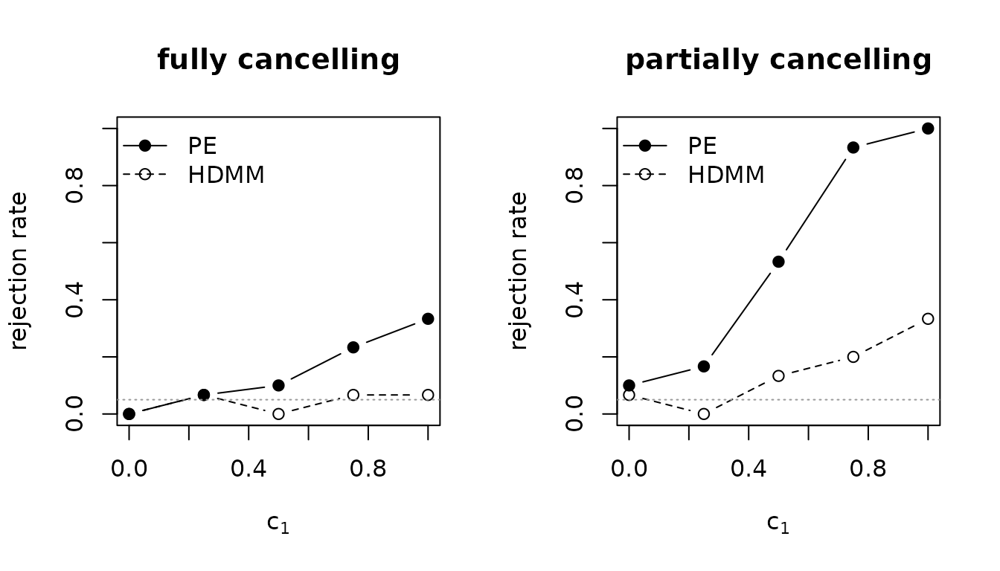

POEMED and the Competition: A Head-to-Head
Source:vignettes/poemed-vs-competitors.Rmd
poemed-vs-competitors.RmdThe established test for whether any of many candidate mediators is active is the total-indirect-effect Wald test of Guo et al. (2022), which this package reports as HDMM. POEMED’s power-enhanced test (PE) keeps that test intact and adds a component that reads the marginal signal from individual mediators. The two therefore agree by construction whenever the enhancement is zero, and differ only when it is not.
Under the global null the two coincide, and both hold their size. When the active mediators all push the outcome the same way, both reject and the enhancement adds a margin (the article’s Figure 1(a)); that homogeneous case is the easy one, and it is not the one that motivates the method. The cases that do, mediators acting in different directions, are where the benchmark loses power and the power-enhanced test does not. This vignette leads with those, then shows the homogeneous case, and lets the output speak throughout. (Other comparators named in the article, namely HILMA, GlobalTest, HDMT, and DACT, live in separate packages; the closing section shows how to fold them in if you have them installed.)
One data set, two verdicts
Consider two data sets with the same exposure, mediators, and sample size. In the first, the active mediators all push the outcome the same way (homogeneous). In the second, they push in opposite directions and exactly cancel, so the total indirect effect is zero even though four mediators are genuinely active (contrasting).
homo <- simulate_mediation_data(n = 200, p = 80, outcome = "continuous",
pattern = "homogeneous", c1 = 1)
cont <- simulate_mediation_data(n = 200, p = 80, outcome = "continuous",
pattern = "contrasting", c1 = 1)
verdict <- function(d) {
f <- pe_mediation(d$X, d$Y, d$M, outcome = "continuous")
c(HDMM = f$value[f$term == "pval_hdmm"], PE = f$value[f$term == "pval_pe"])
}
round(rbind(homogeneous = verdict(homo), contrasting = verdict(cont)), 4)
#> HDMM PE
#> homogeneous 0.0003 0
#> contrasting 0.0243 0When the mediators agree in sign, both tests reject, the power-enhanced one more decisively. When the mediators cancel, the benchmark sees a zero total indirect effect and returns a large p-value, while the power-enhanced test still detects mediation. Both data sets contain real mediation; only one test sees it in both.
Size: neither test trades error for power
A fair comparison starts at the null. With no active mediator
(c1 = 0) a test should reject about 5% of the time. The
enhancement is designed to vanish under the null, so PE inherits the
benchmark’s size rather than buying power with inflated error:
size <- pe_power_curve(n = 150, p = 50, outcome = "continuous",
pattern = "contrasting", c1_grid = 0, n_rep = 60)
size[, c("rejection_hdmm", "rejection_pe")]
#> rejection_hdmm rejection_pe
#> 0 0Both sit near the nominal 0.05 (with 60 replications a rate near 0.05 is known to within about 0.03). Whatever PE gains later, it does not come from a looser null.
Power where it counts: heterogeneous mediation
A signal-strength sweep makes the gap visible. The shared helper below draws the benchmark and the power-enhanced rejection rates on one plot.
draw <- function(pc, main) {
plot(pc$c1, pc$rejection_pe, type = "b", pch = 19, ylim = c(0, 1),
xlab = expression(c[1]), ylab = "rejection rate", main = main)
lines(pc$c1, pc$rejection_hdmm, type = "b", pch = 1, lty = 2)
abline(h = 0.05, col = "grey60", lty = 3)
legend("topleft", c("PE", "HDMM"), pch = c(19, 1), lty = c(1, 2), bty = "n")
}
grid <- c(0, 0.25, 0.5, 0.75, 1)Two heterogeneous settings, both realistic. On the left, the active mediators fully cancel (the total indirect effect is exactly zero). On the right, six mediators of mixed sign only partially cancel, leaving a small nonzero total indirect effect, the kind of messy signal real data actually presents. In both the benchmark stays near its size across the grid while the power-enhanced test rises above it.
p <- 50
# Mixed-sign mediators that only partially cancel: a small but nonzero total
# indirect effect, where the benchmark is weak and the enhancement is not.
alpha_mix <- c(1, -0.9, 0.8, -0.7, 0.6, -0.5, rep(0, p - 6))
tau_mix <- c(rep(0.3, 6), rep(0, p - 6))
pc_cancel <- pe_power_curve(n = 150, p = p, outcome = "continuous",
pattern = "contrasting", c1_grid = grid, n_rep = 30)
pc_mixed <- pe_power_curve(n = 150, p = p, outcome = "continuous",
c1_grid = grid, n_rep = 30,
outcome_args = list(alpha_m = alpha_mix, tau = tau_mix))
op <- par(mfrow = c(1, 2))
draw(pc_cancel, "fully cancelling")
draw(pc_mixed, "partially cancelling")
par(op)At c1 = 1 the rates are 0.07 against 0.33 (fully
cancelling) and 0.33 against 1.00 (partially cancelling), from 30
replications, so each carries a Monte Carlo standard error of up to
0.09. The benchmark is built on the total indirect effect; when that
quantity is small or zero despite active mediators, it has little to
detect. The power-enhanced test reads the individual mediators directly.
The gap is larger at the article’s design, where the default tuning grid
costs less power (see ?pe_lambda_grid): at
n = 300, p = 500, and c1 = 1 the
article’s Figure 1(b) shows about 0.15 against 0.76.
Homogeneous Mediation: Both Tests Work, and the Enhancement Still Helps
The easy case. When every active mediator pushes the same way, the total indirect effect is large and the benchmark is already powerful; the enhancement adds a margin rather than a rescue:
pc_homo <- pe_power_curve(n = 150, p = p, outcome = "continuous",
pattern = "homogeneous", c1_grid = grid, n_rep = 30)
draw(pc_homo, "homogeneous")At c1 = 0.5 the benchmark rejects in 23 percent of
replications and the power-enhanced test in 57 percent (the article’s
Figure 1(a) prints 0.690 against 0.940 at its design). This is the
honest boundary of the claim: where the benchmark is already strong
POEMED adds a margin, and where the benchmark is weak it pulls away.
The pattern holds for binary and count outcomes
The enhancement is not particular to continuous outcomes. Here is the
rejection rate at a fixed contrasting signal (c1 = 1) for
all three outcome models; the benchmark stays near its size (within
Monte Carlo error, about 0.1 at 20 replications) while PE is well above
it:
at_c1 <- function(outcome, c2) {
pc <- pe_power_curve(n = 180, p = 50, outcome = outcome,
pattern = "contrasting", c1_grid = 1, c2 = c2,
n_rep = 20)
c(HDMM = pc$rejection_hdmm, PE = pc$rejection_pe)
}
round(rbind(continuous = at_c1("continuous", 0.5),
binary = at_c1("binary", 1),
count = at_c1("count", 0.4)), 3)
#> HDMM PE
#> continuous 0.05 0.5
#> binary 0.15 0.7
#> count 0.00 1.0Beyond a yes/no: which mediators?
The benchmark answers one global question. The power-enhanced screen also returns which mediators are active, and how reliably. Over repeated contrasting data sets, it recovers the active set with high precision and moderate recall, while keeping false positives rare:
id <- pe_identification_study(n = 150, p = 60, outcome = "continuous",
pattern = "contrasting", c1_grid = c(0, 1),
n_rep = 30, methods = "Bonferroni")
id
#> c1 method fwer fdr precision recall n_valid n_empty
#> 0 Bonferroni 0 0 0 0 30 0
#> 1 Bonferroni 0 0 0.2667 0.06667 30 0
#>
#> Outcome: continuousThe familywise error rate is 0.00 at the null and 0.00 at
c1 = 1; precision and recall at c1 = 1 are
0.27 and 0.07 at this small design (30 replications). At the article’s
design the supplement prints, for the contrasting setting at
c1 = 0.6, a familywise error rate of 0.000 with precision
0.403 and recall 0.122, which the default grid reproduces. The benchmark
offers no comparable list, because a total-indirect-effect test of zero
points to no mediator at all.
On real data
The contrast is not only a simulation artifact. On the shipped WHO
health-expenditure data, summary() reports, group by group,
where the power-enhanced test finds mediation the benchmark does
not:
imr <- WHO_mediation_analysis("imr", groupings = c("global", "region", "income"),
lambda_grid = seq(0.1, 5, length.out = 100))
#> Warning: The fit failed in 1 group, reported as NA: AMR (system is
#> computationally singular: reciprocal condition number = 1.3074e-17)
summary(imr)
#> POEMED comparison: IMR
#> groups: 11 (10 with data), alpha_level = 0.05
#> detected by benchmark (HDMM): 4 by power-enhanced (PE): 7
#> PE detects mediation in 3 groups the benchmark misses:
#> group n_countries pval_hdmm pval_pe active_mediators
#> SEAR 5 0.309 4.13e-41 ext_usd2021_pc
#> WPR 9 0.872 3.77e-83 chi_che, pvtd_gdp
#> Low 16 0.316 2.10e-62 pvtd_usd2021
#> most-flagged mediators:
#> gge_gdp 2
#> chi_che 1
#> ext_usd2021_pc 1
#> oops_che 1
#> pvtd_gdp 1
#> pvtd_usd2021 1
#> shi_che 1In several regions and income groups the benchmark p-value is large (in the Western Pacific it is near one), yet the power-enhanced test detects a specific health-expenditure indicator. These are the cases where mediators act heterogeneously and the conventional test is blind.
(The small region-by-income cells contain indicators that are
constant within the cell. WHO_mediation_analysis() drops
those automatically; when calling pe_mediation() on such a
subset yourself, pass drop_constant = TRUE to do the
same.)
A balanced scorecard
| Situation | HDMM (benchmark) | PE (POEMED) |
|---|---|---|
| Null (no mediation) | correct ~5% size | correct ~5% size |
| Homogeneous mediation | powerful | powerful, with a margin |
| Heterogeneous: fully cancelling | no power | recovers the signal |
| Heterogeneous: partially cancelling | weak | recovers the signal |
| Which mediators are active | not provided | identified, with FWER/FDR control |
| Real-data subgroups | misses several | finds them |
PE holds its size within Monte Carlo error of the nominal level in every setting the article reports, adds a margin where the benchmark is already strong, and supplies power where the benchmark has little. That is the whole of the claim, and the rows above are the evidence for it.
Folding in other comparators
The article also benchmarks against HILMA (Zhou et al. 2020), GlobalTest (Djordjilovic et al. 2019), and, for individual-mediator identification, HDMT (Dai et al. 2022) and DACT (Liu et al. 2022). Those methods live in their own packages, which POEMED does not depend on. If you have them installed, they slot directly alongside a POEMED fit on the same simulated data. For example:
d <- simulate_mediation_data(n = 300, p = 500, outcome = "continuous",
pattern = "contrasting", c1 = 0.5)
pe <- pe_mediation(d$X, d$Y, d$M, outcome = "continuous")
# HILMA (package 'freebird'): a debiased-lasso total-mediation-effect test.
hilma_p <- freebird::hilma(d$Y, d$M, d$X)$pvalue
# GlobalTest (Bioconductor package 'globaltest'): a score test of the
# mediator block against the outcome.
gt_p <- globaltest::p.value(globaltest::gt(d$Y, d$M))
data.frame(method = c("HDMM", "PE-HDMM", "HILMA", "GlobalTest"),
pval = c(pe$value[pe$term == "pval_hdmm"],
pe$value[pe$term == "pval_pe"], hilma_p, gt_p))Run on contrasting data, the total-indirect-effect methods (HDMM, HILMA) behave alike, because they are built on the quantity that cancels, while the power-enhanced test detects the active mediators, the comparison the article’s figures report in full.
References
Yu, X., and Kelley, K. (in press). Power Enhancement in High-Dimensional Heterogeneous Mediation Analysis. Journal of the American Statistical Association.
Guo, X., Li, R., Liu, J., & Zeng, M. (2022). High-dimensional mediation analysis for selecting DNA methylation loci mediating childhood trauma and cortisol stress reactivity. Journal of the American Statistical Association, 117(539), 1110–1121. https://doi.org/10.1080/01621459.2022.2053136
Zhou, R. R., Wang, L., & Zhao, S. D. (2020). Estimation and inference for the indirect effect in high-dimensional linear mediation models. Biometrika, 107(3), 573–589. https://doi.org/10.1093/biomet/asaa016
Djordjilovic, V., Page, C. M., Gran, J. M., Nost, T. H., Sandanger, T. M., Veierod, M. B., & Thoresen, M. (2019). Global test for high-dimensional mediation: Testing groups of potential mediators. Statistics in Medicine, 38(18), 3346–3360. https://doi.org/10.1002/sim.8199
Dai, J. Y., Stanford, J. L., & LeBlanc, M. (2022). A multiple-testing procedure for high-dimensional mediation hypotheses. Journal of the American Statistical Association, 117(537), 198–213. https://doi.org/10.1080/01621459.2020.1765785
Liu, Z., Shen, J., Barfield, R., Schwartz, J., Baccarelli, A. A., & Lin, X. (2022). Large-scale hypothesis testing for causal mediation effects with applications in genome-wide epigenetic studies. Journal of the American Statistical Association, 117(537), 67–81. https://doi.org/10.1080/01621459.2021.1914634
Session Information
sessionInfo()
#> R version 4.6.1 (2026-06-24)
#> Platform: x86_64-pc-linux-gnu
#> Running under: Ubuntu 24.04.5 LTS
#>
#> Matrix products: default
#> BLAS: /usr/lib/x86_64-linux-gnu/openblas-pthread/libblas.so.3
#> LAPACK: /usr/lib/x86_64-linux-gnu/openblas-pthread/libopenblasp-r0.3.26.so; LAPACK version 3.12.0
#>
#> locale:
#> [1] LC_CTYPE=C.UTF-8 LC_NUMERIC=C LC_TIME=C.UTF-8
#> [4] LC_COLLATE=C.UTF-8 LC_MONETARY=C.UTF-8 LC_MESSAGES=C.UTF-8
#> [7] LC_PAPER=C.UTF-8 LC_NAME=C LC_ADDRESS=C
#> [10] LC_TELEPHONE=C LC_MEASUREMENT=C.UTF-8 LC_IDENTIFICATION=C
#>
#> time zone: UTC
#> tzcode source: system (glibc)
#>
#> attached base packages:
#> [1] stats graphics grDevices utils datasets methods base
#>
#> other attached packages:
#> [1] POEMED_1.0.0
#>
#> loaded via a namespace (and not attached):
#> [1] cli_3.6.6 knitr_1.52 rlang_1.3.0 xfun_0.61
#> [5] otel_0.2.0 generics_0.1.4 textshaping_1.0.5 jsonlite_2.0.0
#> [9] htmltools_0.5.9 ragg_1.5.2 sass_0.4.10 glmnet_5.1
#> [13] rmarkdown_2.32 grid_4.6.1 evaluate_1.0.5 jquerylib_0.1.4
#> [17] fastmap_1.2.0 foreach_1.5.2 yaml_2.3.12 lifecycle_1.0.5
#> [21] compiler_4.6.1 codetools_0.2-20 fs_2.1.0 Rcpp_1.1.2
#> [25] lattice_0.22-9 systemfonts_1.3.2 digest_0.6.39 R6_2.6.1
#> [29] ncvreg_3.16.0 splines_4.6.1 shape_1.4.6.1 bslib_0.12.0
#> [33] Matrix_1.7-5 tools_4.6.1 iterators_1.0.14 survival_3.8-6
#> [37] pkgdown_2.2.1 cachem_1.1.0 desc_1.4.3